ドリームパーク
ホロドリは、テーマパークを舞台にしたリズム＆RPGです。
ホロメンクエストをクリアすると、いろいろなホロメンを操作して遊べるようになります。
ドリームパークの遊び方
ホロメンクエスト
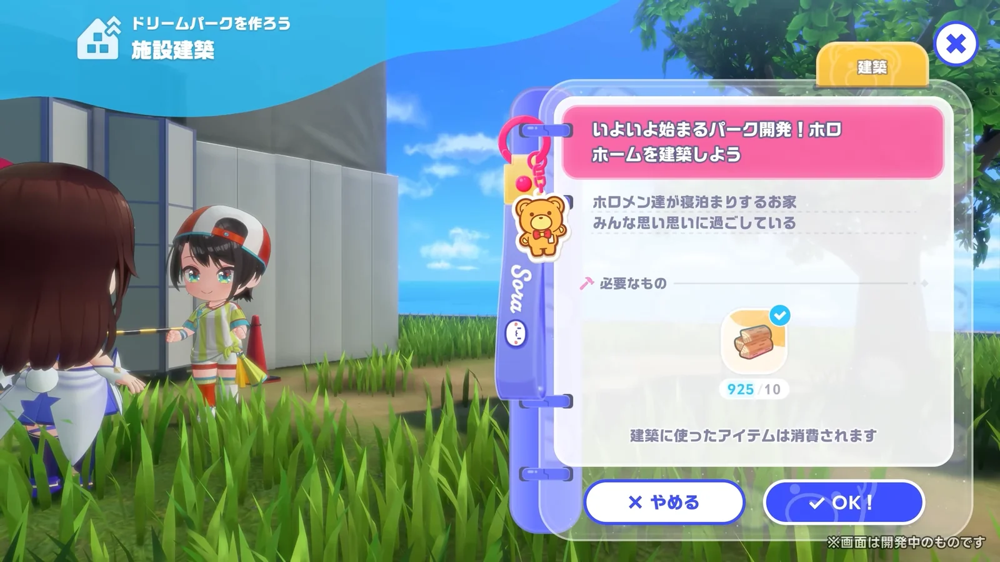
ホロメンクエストは毎日ランダムで2人分登場します。
クリアすると、操作できるホロメンやソロ楽曲の解放につながります。
ホロメン招待状を使うと、対象のホロメンを指定して招待できる場合があります。
解放されるミニゲーム
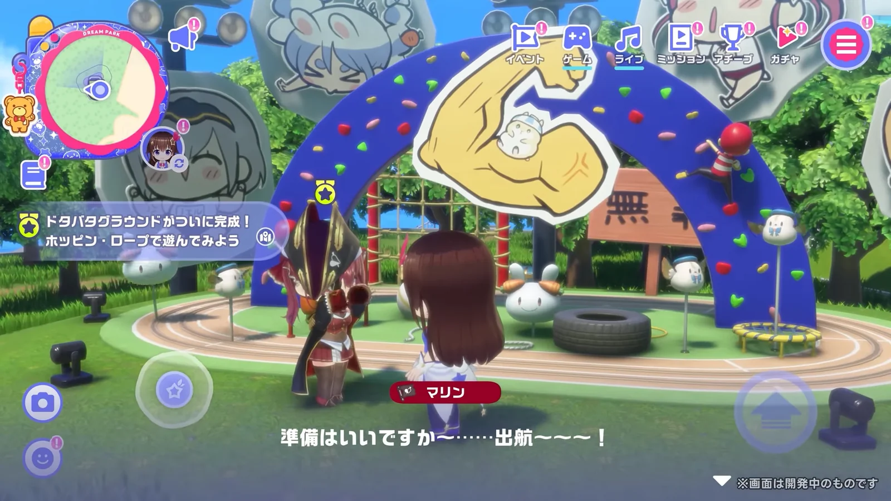
クエストやストーリーを進めると、施設・楽曲・ミニゲームが少しずつ解放されます。
ミニゲームでは建築素材・育成素材・オートチケットなどを獲得できます。
スコアアタックやマルチプレイ対応の遊びもあります。
楽曲解禁
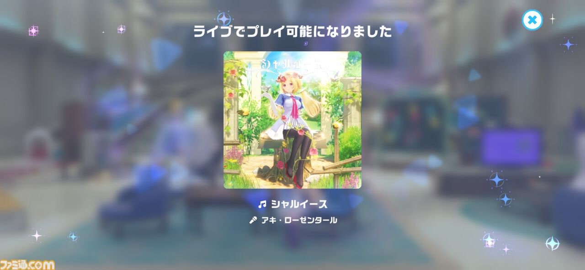
クエストやストーリーを進めると、遊べる楽曲が少しずつ解禁されます。
ドリームパークを進めながら、新しい楽曲を増やしていきましょう。
フォトモード
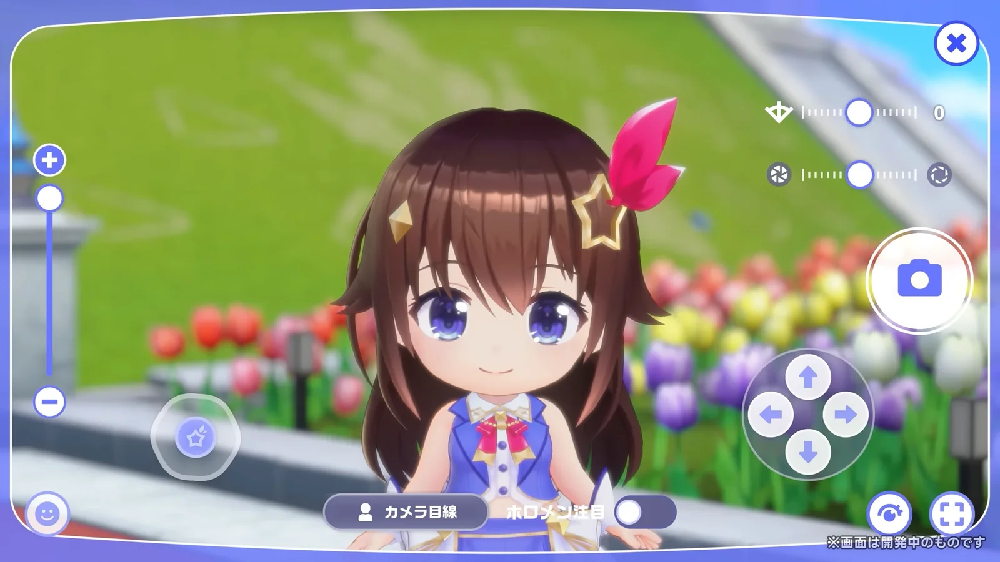
フォトモードでは、ズームや絞りなどを調整してホロメンを撮影できます。
ドリームパークでは、Live2D演出やデフォルメホロメン同士の掛け合いも楽しめます。
ハーモニーガーデン
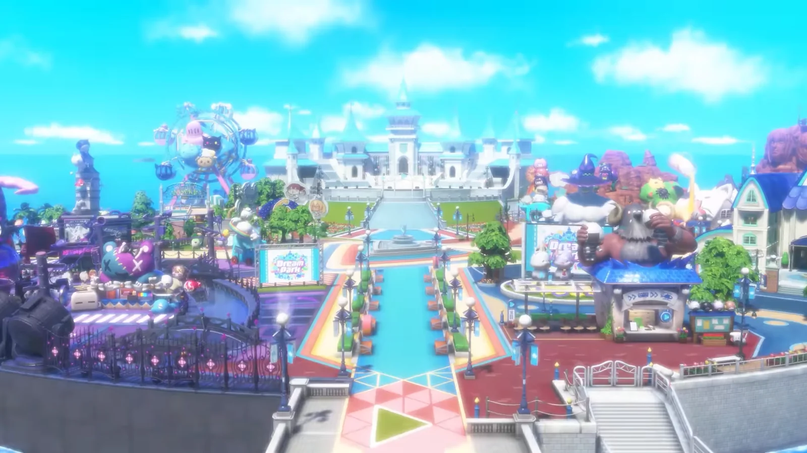
ライブやミニゲームで資材を集めると、ショップやミニゲームなどの新しい機能を解放できます。
ホロメンと一緒に、夢のテーマパークを少しずつ広げていくエリアです。
ホッピン・ロープ
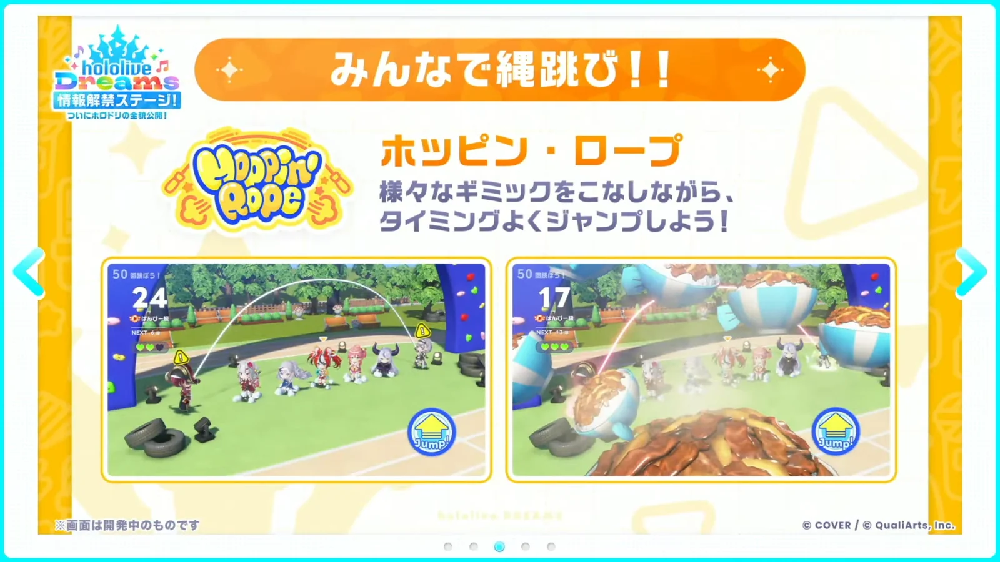
大縄跳びで回数や時間に挑戦するミニゲームです。
プレイ中は、縄のスピードが上がったり、画面を遮る障害物が出たりするなど、ホロメンごとの妨害演出が発生します。
タイミングを見ながらジャンプを続け、ハイスコアを目指します。
そろえてクッキング
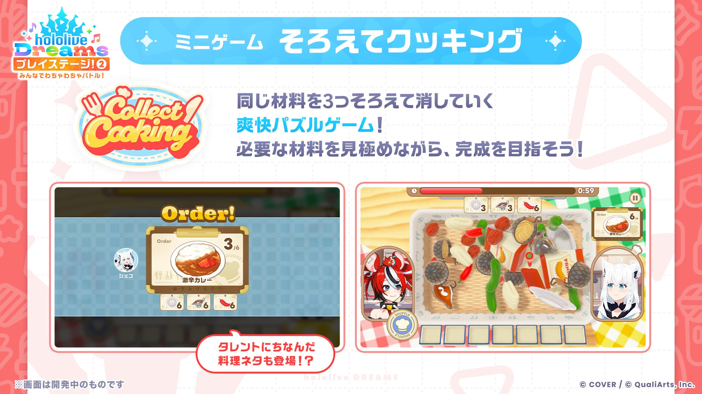
同じ材料を3つそろえて消していく、爽快パズルゲームです。
タレントにちなんだ料理ネタも登場します。
必要な材料を見極めながら、料理の完成を目指します。
そろえてクッキングの遊び方
概要
| 遊べる場所 | ハーモニーガーデンに建造される施設から遊べます。 |
|---|---|
| 目的 | カゴに入った大量の食材から、作りたい料理に必要な食材を素早く取り出して完成させます。 |
| クリア条件 | 10分以内に指定品目をすべて完成できたらクリアです。 |
ルール
- 食材はカゴの中から選びます。必要な材料を見極めて取り出しましょう。
- 取り出した食材を手に持てる数は7つまでです。
- 同じ食材を3個取り出すと、料理に不要な食材でも手持ちから除去されます。
- 食材を持ちきれなくなるとゲームオーバーです。
- カゴを揺らすと、食材の位置を動かせます。
登場する料理
| 激辛カレー | シェフ: 白上フブキ 食材: ライス、カレー、唐辛子 辛いもの好き狐も太鼓判の超絶HOTなカレーライス。フブキはもっと辛くしたいらしいが、周りに止められている。 |
|---|---|
| ツナマヨクレープ | シェフ: アキ・ローゼンタール 食材: 卵、小麦粉、ツナ缶 アキロゼ考案の絶品クレープ。生地の甘みとツナマヨの塩加減の相性は抜群で、やみつきになるホロメンが続出中。 |
| えびふらいおん天丼 | シェフ: 夏色まつり 食材: えびふらいおん、大盛りライス、ソース えびふらいおんを模したまつり渾身の天丼。ぷりぷりエビとリッチなボリュームに、お腹も心も満たされる。 |
| ちょこっとハンバーグ | シェフ: 癒月ちょこ 食材: ひき肉、玉ねぎ、パン粉 肉汁と愛情が口いっぱいに広がるハンバーグ。考案したちょこ本人も「天才じゃない？」と自画自賛するおいしさ。 |
| ししろん系ラーメン | シェフ: 獅白ぼたん 食材: 麺、もやし、SSR海苔 津々浦々、数多のラーメンを食べたぼたんが放つ究極の一杯。スープに至るまでこだわりつくされている。 |
| ルイ姉特製ポテトサラダ | シェフ: 鷹嶺ルイ 食材: じゃがいも、きゅうり、ハム ルイがよく作っているというポテトサラダ。心を奪われたホロメンは数知れず、一度食べればリピート間違いなし。 |
| シリアル牛乳 | シェフ: パヴォリア・レイネ 食材: シリアル、牛乳、手形の皿 手形のお皿に乗ったレイネ渾身のシリアル牛乳。シリアルと牛乳がこれ以上ないほど完璧な比率で混ざり合っている。 |
| 温玉うどん | シェフ: オーロ・クロニー 食材: うどん、温泉卵、長ネギ クロニーの愛する温玉うどん。コシのある麺に濃厚な温泉卵を絡め、すすれば思わずGOODなひと時が訪れる。 |
| 限界飯 | シェフ: 一条莉々華 食材: ソーセージ、梅干し、レトルトライス ご飯、ソーセージ、梅干しのコラボはシンプルイズベスト。こーゆーのがええんやと言いたくなる莉々華推薦の一品。 |
ハーモニーガーデンのトレジャーボックス全26個
屋外に23個、施設内に3個あります。マップ右上の宝箱アイコンで回収数を確認できます。
| No. | 区分 | 位置・目印 |
|---|---|---|
| 1 | 屋外 | マップ左下の小橋の左側 |
| 2 | 屋外 | holoXアジトの海側 |
| 3 | 屋外 | 砂浜の電気ボックスの下 |
| 4 | 屋外 | ドタバタグラウンドの木製看板の後ろ |
| 5 | 屋外 | ライブステージ左側の大型モニターの下 |
| 6 | 屋外 | ライブステージ右側の裏 |
| 7 | 屋外 | ライブステージ右側の大型モニターの下 |
| 8 | 屋外 | ライブステージ中央の後ろ |
| 9 | 屋外 | ライブステージ右側の草地 |
| 10 | 屋外 | サボテン岩山の頂上、海側 |
| 11 | 屋外 | ホロホーム後方の自動販売機横 |
| 12 | 屋外 | ホロホームの右側 |
| 13 | 屋外 | フォーチュンネットワークの左側 |
| 14 | 屋外 | ゲーマーズステーションの猫の掲示板裏 |
| 15 | 屋外 | h3roビークルの左側 |
| 16 | 屋外 | ねぽらぼマートの裏 |
| 17 | 屋外 | キセキの輪の左下 |
| 18 | 屋外 | プロミスタワーの裏 |
| 19 | 屋外 | ルチュ・チュ・モビル15の左側 |
| 20 | 屋外 | Adventの施設にあるゴミ箱の横 |
| 21 | 屋外 | トコホロロの電柱横 |
| 22 | 屋外 | Adventの施設横（EP16クリア後） |
| 23 | 屋外 | フェイスマウンテン山頂の高台 |
| 24 | 施設内 | たらふくジャーニー、ベーカリーエリア左側 |
| 25 | 施設内 | ホロホーム1階右側の階段下 |
| 26 | 施設内 | HOLOシネマズ右側、額入りサインの下 |
屋外を23個回収しても不足する場合は、ホロホーム、HOLOシネマズ、たらふくジャーニーの施設内を確認してください。
メガスフィア
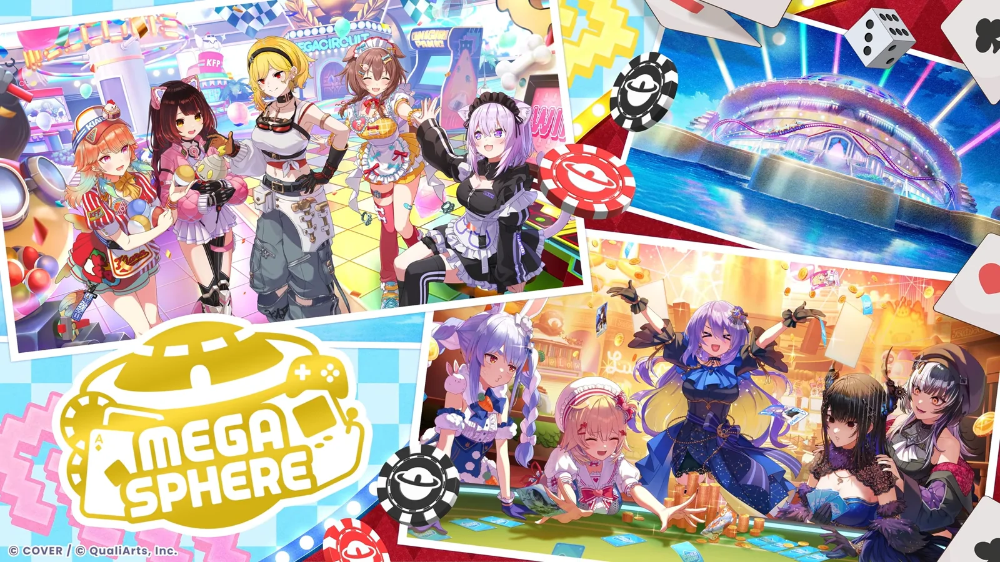
ゲーム＆カジノエリアで構成されたエリア
コインを増やしながらストーリーを進めて
エリアを完成させよう！
メガサーキット
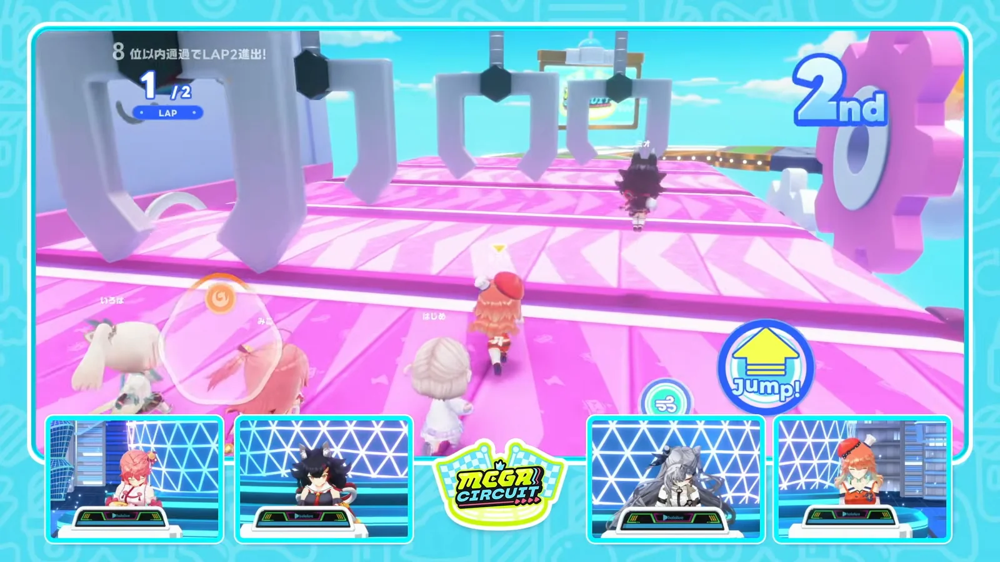
タレントにちなんだ10種類のステージから、
ランダムで選ばれた３つのステージで勝負！
道中の障害物をよけて1位を目指そう！
ポカジャン！
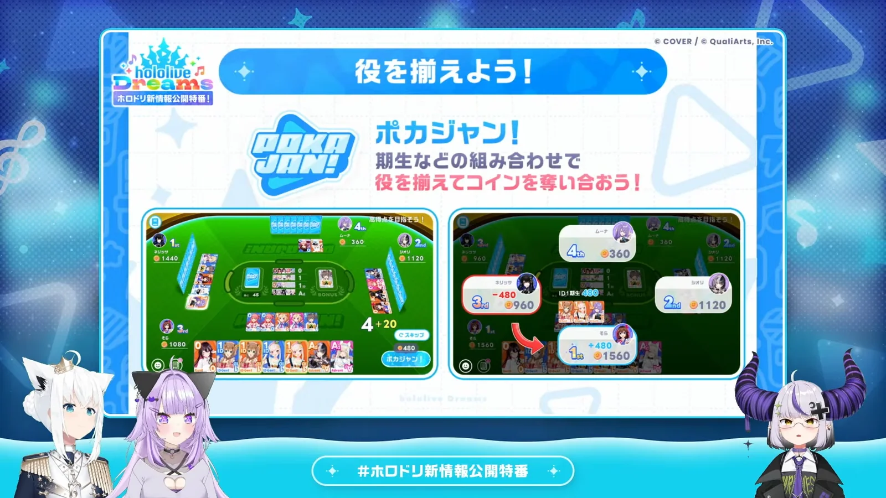
期生などの組み合わせで役を揃えてコインを奪い合おう！
ポカジャンの遊び方
基本
| 遊べる場所 | メガスフィアの施設から遊べる4人用カードゲームです。 |
|---|---|
| 目的 | カードを入れ替えながら役を作り、コインを奪い合います。 |
| カード | ゲームごとに4つの期生が選ばれ、使われるホロメンカードが変わります。 |
| 進行 | 山札からカードを引き、いらないカードを捨てて手札を整えます。 |
| 終了 | 山札がなくなると終了し、最終スコアで順位が決まります。 |
主な役
| 同じホロメンを3枚 | 同じホロメンカードを3枚集める役です。 |
|---|---|
| 同期ホロメンを全員 | 同じ期生のホロメンを全員集める役です。 |
| ボーナス | 役に使ったカードの色が揃う、またはボーナスカードを含むと加点されます。 |
コツ
- 捨て札を見ると、相手が狙っていないカードや狙っている役を予想できます。
- メモのマークから、そのゲームで使われるカード枚数を確認できます。
- 1位を狙うなら、役を作るだけでなくスコア差も意識するのが大切です。
メガスフィアのトレジャーボックス全16個
ロビーに3個、プレイエリアに6個、カジノエリアに7個あります。
| No. | 区分 | 位置・目印 |
|---|---|---|
| 1 | ロビー | 入口左側の手すり付近 |
| 2 | ロビー | 左奥のカウンター付近、観葉植物の横 |
| 3 | ロビー | 右奥にある赤いソファの横 |
| 4 | プレイエリア | 入口左側にある大きな的の横 |
| 5 | プレイエリア | クレーンゲーム機の前 |
| 6 | プレイエリア | ダンスマシンの右側 |
| 7 | プレイエリア | メガプリ横のゴミ箱前 |
| 8 | プレイエリア | 一番端にあるアーケード筐体の横 |
| 9 | プレイエリア | 入口右側にある大きな的の横 |
| 10 | カジノエリア | スロットマシン左下の階段横 |
| 11 | カジノエリア | 2階左奥、観葉植物の横 |
| 12 | カジノエリア | 2階中央のテーブル左側 |
| 13 | カジノエリア | No.12の場所から後ろを向き、階段を下りた正面 |
| 14 | カジノエリア | 2階右側、占い屋横にあるチップの隣 |
| 15 | カジノエリア | スクラッチコーナー右側のハート看板横 |
| 16 | カジノエリア | 中央の円形エリア南側、手すり付近 |
カジノエリアは2章8話で解放され、2章9話クリア後まで宝箱が追加されます。
ソーダポップラグーン

ボートで海と島々を巡り、さかな釣りやスプラッシュボールを楽しめる第3エリアです。
メインクエスト第2章12話「さわがしい時間は終わらない」をクリアすると解放されます。
第3章を進めることで移動可能な海域が広がり、施設やミニゲームが順番に解放されます。
さかな釣り
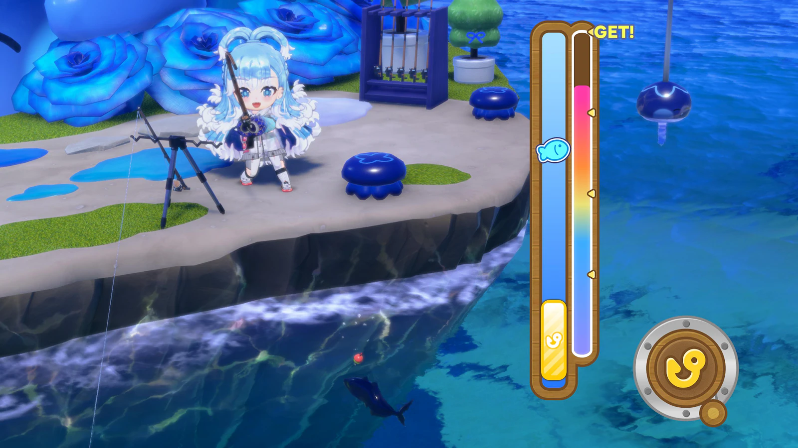
エサ、釣りスポット、ゲーム内の時間帯によって釣れる魚が変化します。
釣った魚は魚図鑑へ登録され、種類や釣果に応じて報酬を受け取れます。
集めたソーダポップコインは、一条VIPラウンジで素材などと交換できます。
スプラッシュボール
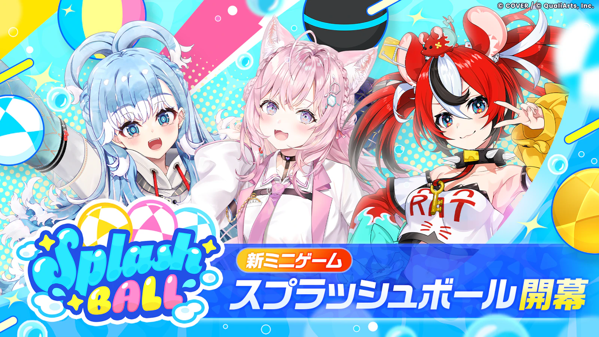
3人ずつの3チームで競う海上ミニゲームです。
ボートでボールを運び、相手チームのゴールへ入れて得点を獲得します。
個人スコアとチーム順位に応じて報酬を受け取れます。
トレジャーボックス全28個の位置
ストーリーの進行に合わせて増え、EP14まで進めると全28個が出現します。
マップ右上の宝箱アイコンで、現在出現している数と開封済みの数を確認できます。
| No. | 出現時期 | 位置・目印 |
|---|---|---|
| 1 | EP2 | エントランス東側、岩壁に囲まれた暗がり |
| 2 | EP2 | 南西の岸、倒木と岩壁の間にある草地 |
| 3 | EP2 | エントランス付近の桟橋の先 |
| 4 | EP2・ボート解放後 | アスレチック東側の海上に浮かぶタル |
| 5 | EP2・ボート解放後 | フィッシュブルーがある小島の上 |
| 6 | EP3 | フィッシュブルー付近、青いバラの茂みの間 |
| 7 | EP4 | 一条VIPラウンジの建物外側の通路 |
| 8 | EP4 | こよラボ・海洋支部の白いデッキ |
| 9 | EP5・ボートLv2 | 西側の崖の間、海上に浮かぶタル |
| 10 | EP5・ボートLv2 | アスレチックの島の脇、海上に浮かぶタル |
| 11 | EP5・ボートLv2 | アスレチックがある島の上 |
| 12 | EP6 | ソーダポップラグーンステージ裏手、扉の先 |
| 13 | EP7 | ラミィズスノードームの雪の上 |
| 14 | EP8 | スプラッシュスタジアム横、海上に浮かぶタル |
| 15 | EP9 | アスレチックがある島の砂浜 |
| 16 | EP10・ボートLv3 | 西の岸の岩場、段になった潮だまり |
| 17 | EP10・ボートLv3 | 北の入り江の東、浅瀬の砂地 |
| 18 | EP10・ボートLv3 | 東の岸にある洞窟の中 |
| 19 | EP10・ボートLv3 | うぱおヘヴン西側、海に浮かぶ草の小島 |
| 20 | EP10・ボートLv3 | スプラッシュスタジアム東側、海に浮かぶ草の小島 |
| 21 | EP11クリア後 | 入り江（クジラの住処）の海上に浮かぶタル |
| 22 | EP12 | ぼこぼこビーコンの雲の島の上 |
| 23 | EP13 | うぱおヘヴンの店内 |
| 24 | EP14 | ぽぽぽハッピーキャンプのソファ横 |
| 25 | EP14 | 東の砂浜にある木製デッキ |
| 26 | EP14 | 西の岸にある崖の上 |
| 27 | EP14 | 東の崖の上にある草地 |
| 28 | EP14 | 西の岸、岩壁のそばにある草地 |
全回収時の主な報酬は、レッドダイヤ1,000個、ガチャチケット3枚、ミュージックディスク2枚、ホロリウム1個などです。